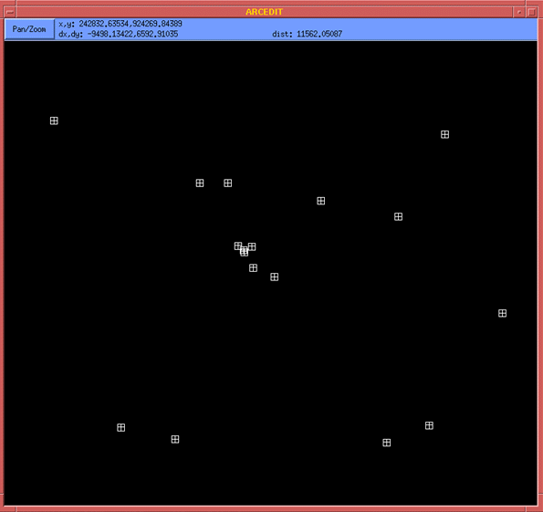

Building the Salem Witchcraft GIS
Digitizing the Upham Map
I. Pinpointing Control Points on Aerial Photography
At this point, we are ready to begin the process of identifying control points using the GNIS, address matching, and aerial photography data. These three data sources were brought together as background information in an ArcInfo editing session. Using supplementary information from Brown's Guide and from Ben Ray's recent visits to Salem, we were able to identify with confidence those features on the aerial photographs which exactly represented the features approximated in the GNIS data and through address matching.
 |
| ABOVE: The green crosses represent the approximate location of control points. The white boxes represent their actual location on aerial photography. |
|  |
| ABOVE: All control points, viewed in isolation. |
 |
|
ABOVE: All control points with aerial photography backdrop. BELOW: All control points with USGS toposheets (1:25000) as a backdrop. |
 |
© Copyright 1999 The Rector and Visitors
of the University of Virginia
ArcInfo is a trademark of the ESRI
Corporation; Access is a trademark of Microsoft Corporation